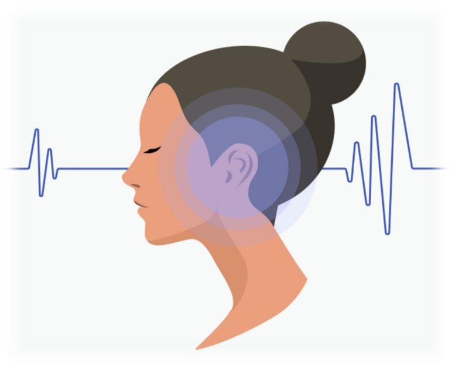
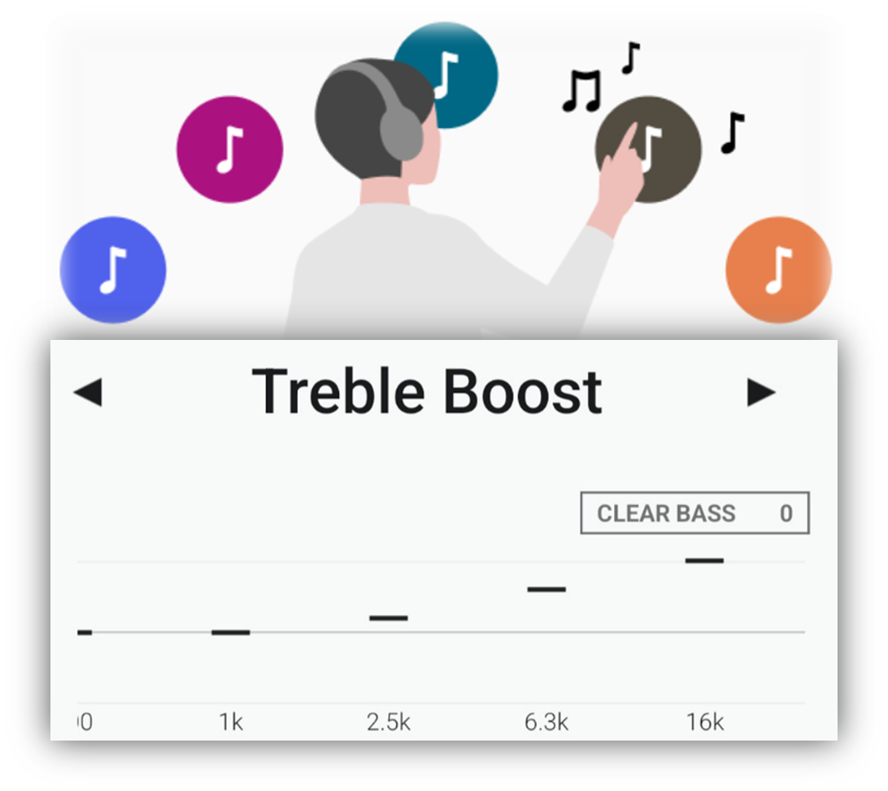

Sound Connect 快问快答：索尼耳机的官方管家到底管些什么
Sound Connect 是索尼为自家耳机和音箱做的官方配套 App，从 360 Reality Audio 空间音频、EQ 调校到固件 OTA 更新一把抓。本文以问答形式梳理八个最常见的问题。
整理一篇关于 Sound Connect 的快问快答——这个索尼耳机用户几乎必装的官方 App，用的人不少但真正摸透功能的不多。八个问题覆盖定位、核心功能、使用场景和常见坑。
Sound Connect 到底是干嘛的？
简单说就是索尼旗下耳机和音箱的统一管理后台。它不是一个音频播放 App，而是专门用来给你的设备做配置、升级、音效调校的配套工具。用索尼的 WH-1000XM 系列、WF-1000XM 系列或者部分音箱产品的话，装它几乎是必须的，从Sound Connect下载就能拿到——降噪档位、环境音、空间音频这些功能的精调全部藏在它里面，系统蓝牙设置里只能调个大概。
它最早的名字叫 Sony Headphones Connect，后来扩展到音箱产品后改成了现在的 Sound Connect，功能边界也从"耳机专属"变成了"个人音频设备管家"——这在它的官网上写得很清楚。
哪些设备能用它？
仅限索尼自家的产品。目前支持的主力线包括：WH-1000XM 头戴式降噪系列、WF-1000XM 真无线系列、WI-1000XM 颈挂式系列，以及部分 SRS 便携音箱。如果你用的是其他品牌的耳机——哪怕是 LDAC 编码的——Sound Connect 连不上，打开也是空页面。
一个实用的判断方式：设备盒子上如果标了"360 Reality Audio"或者"Headphones Connect 支持"，那就能用。近几年的中高端型号基本都覆盖了，老款可能只支持部分功能。
360 Reality Audio 和 Upmix 有啥区别？
这是最容易搞混的一对概念。Sound Connect 里有两种空间音频模式：
原生 360 Reality Audio 是播放专门制作过的空间音频流媒体——比如索尼精选、Tidal 的部分曲目，音源本身就是多声道录制的，App 直接解码输出。效果最正宗，但内容源有限，你手机里已有的歌单用不了。
Upmix 是把普通立体声甚至单声道音频实时"升维"成空间音频，不需要特殊音源，手机上任何 App 放出来的声音都能套。Upmix 又分 Cinema（视频内容优化，人声定前方、环绕感强）和 Standard（音乐内容优化，整体声场更开阔）两档，看电影切 Cinema、听歌切 Standard 就行。

EQ 预设该怎么选？自定义值得调吗？
Sound Connect 内置了五个 EQ 预设加两个自定义插槽，覆盖了从电子到爵士的常见场景：
- Heavy 加重低频，EDM、嘻哈、电子乐首选；
- Clear 提亮高频，原声、古典、人声表现更好；
- Hard 同时拉低频和高频，摇滚和重金属适用；
- Soft 压低两端突出中频，爵士和流行抒情更耐听；
- Game 强化 FPS 的脚步声和枪声，游戏玩家熟悉的档位。
如果你对调音有追求，两组 Custom 插槽是值得花时间调的。把所有频率滑块先归零，从低频开始一段一段往上试，边调边用你最熟的一首歌当基准——调完自动保存，两组槽互相独立，方便给不同类型的歌存两套参数。
有个小提醒：如果你同时开了自适应音效控制（ASC），EQ 预设会被 ASC 的自动调整覆盖一部分。ASC 优先保证安全的环境音档位，音色微调部分仍然保留，两个功能不会完全打架，但如果你发现某个预设"不太对劲"，先看看 ASC 是不是开着。

自适应音效控制 ASC 听起来很玄，实际用着怎样？
ASC 是 Sound Connect 里最"自动"的一个功能——利用手机的 GPS、加速度计等传感器，实时识别你当前的活动状态然后自动调参数：走路或跑步时调高环境音档位让车辆警报能传进来，静止时保持中等或高强度降噪，乘坐飞机地铁时直接切最高降噪。
从体验上说，它确实能省掉不少手动切档位的麻烦。通勤路上从地铁站走到路面，你会感觉到耳机里的环境音自动变通透；坐下来看书时降噪又悄悄加深。但前提是你得给它位置权限——而且要设成"始终允许"，不然 GPS 拿不到数据它就是个摆设。
它和底部 Tab 里的 Scene 功能是两套东西。ASC 是秒级的实时调整，Scene 是基于时间和地点规则的定时自动播放，比如"每天早上八点在地铁站自动切到我的早高峰歌单"，两套可以同时开。
固件更新到底更了些啥？值得开自动吗？
Sound Connect 里其实有两层更新：App 本身的功能迭代，以及耳机/音箱内部的固件 OTA。固件更新看起来不起眼，但索尼很多新功能都是靠固件推送的，不是靠 App。比如 360 Reality Audio 的新档位、LDAC 编码改进、XM 系列每次大版本固件的降噪算法优化、还有连接稳定性修复——经常掉线的问题刷个固件往往就好了。
升级时 App 底部会弹横幅或设备页面出红点提示，点进去走下载→确认→升级三步就行，过程中别断蓝牙别关 App，大概三到十分钟——完整操作步骤见Sound Connect文档。升级完耳机会自动重启，之前的音效设置不会丢。
建议把自动下载打开，系统标签里找"自动下载软件"开关，选"仅 WLAN"省流量就行。固件更新是低风险高收益的事，保持最新没毛病。
流媒体 App 里怎么注入这些音效？
Sound Connect 有个叫 Optimize Apps 的功能，能把 360 Reality Audio 和 Upmix 无缝注入到你常用的流媒体 App 里。首次打开 360 Reality Audio 时 App 会弹"优化应用"的提示，按它的指引给已装的流媒体 App 做适配就行，完成后在这些 App 里播放时会自动启用空间音频。
支持的流媒体包括 Sony Select、Spotify、Apple Music、YouTube Music 等主流平台。这个功能的好处是你不用在各个 App 里来回切设置，Sound Connect 统一接管——打开 Upmix 之后，手机上任何 App 里放的声音都会被空间化处理。
这套东西靠不靠谱？有啥坑？
总体来说靠谱，但有几个实际使用中容易踩到的点：
第一，权限要给全。 位置权限要"始终允许"、通知权限要开——ASC 和固件更新提醒都依赖这些。装完 App 第一次启动时它会一次性要完所有权限，别习惯性地点"仅使用时允许"或者"拒绝"。
第二，固件升级别中断。 升级过程中蓝牙断了或者 App 被系统杀掉，轻则升级失败重来，重则设备变砖（概率极低但不是零）。升级前确保耳机有足够电量、手机别开省电模式。
第三，EQ 和 ASC 的覆盖关系。 刚才提到过，同时开的时候 ASC 会覆盖部分 EQ 预设。如果你觉得某个预设调了没效果，先检查一下 ASC 是不是在后台接管。
第四，老设备可能功能不全。 2019 年以前的索尼耳机大概率只支持基础的降噪和 EQ，360 Reality Audio 和 Upmix 这些新功能用不了，别折腾。
最后一句：只要你用的是索尼中高端耳机，装一个就能把耳机的潜力全部释放出来——而且完全免费，没广告没内购。国内打开外网不太顺畅的话，Gitee和GitCode都存了一份，GitHub上的源文件和这两边同步更新。